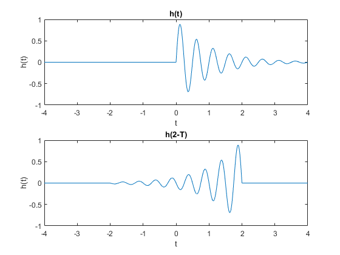

Contents
load htst.mat
Setup
Fs = 1/200;
syms s;
t = -4:Fs:4;
h(t)
ht = zeros(1, length(t)); % Initialize, size of t. ht(round(length(t) / 2):length(t)) = h; % t = 0
h(2-T)
flip = fliplr(h); % Flip the values of h N = round(1/8*length(t)); % ratio (-4 to 4) [8 units] times length to get samples per unit lowend = N*2; % Shift 2 units, this is what is at ht2=zeros(1,length(t)); % Initialize h(t-2) begin = length(t)-lowend - length(h); % Begin at this value endplot = length(t)-lowend; % End at this value ht2(round(begin+1):round(endplot)) = flip; % Place signal in the middle
Plot
subplot(2,1,1); plot(t,ht); %h(t) title('h(t)'); xlabel('t'); ylabel('h(t)'); subplot(2,1,2); plot(t,ht2); %h(2-t) title('h(2-T)'); ylabel('h(t)'); xlabel('t');